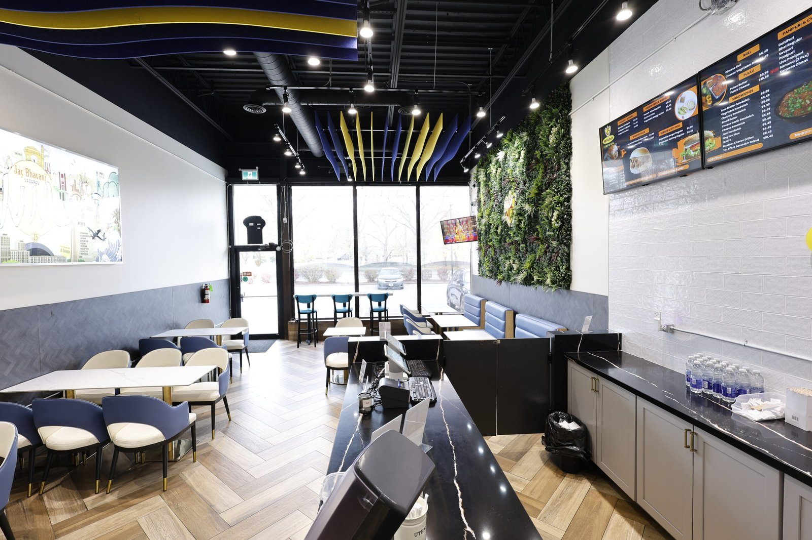
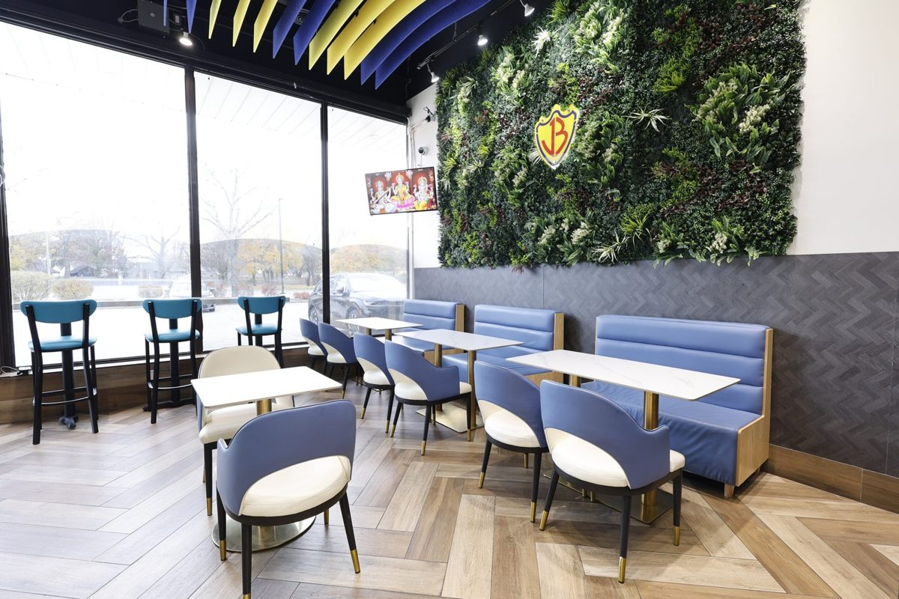
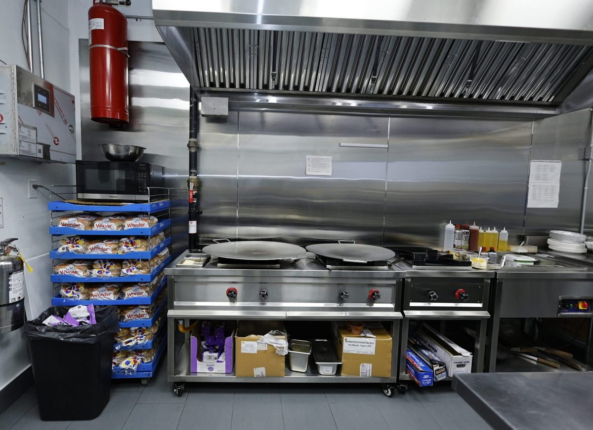
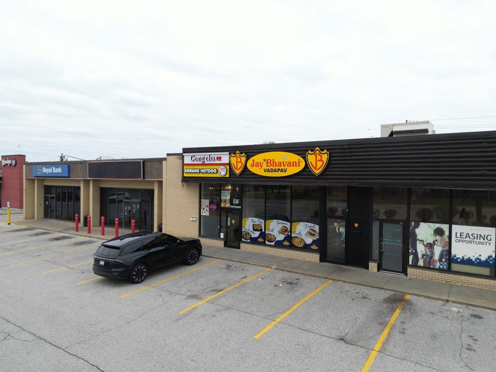

Franchise construction / Windsor, Ontario
Jay Bhavani
The guest experience has a working side.
A fast-casual restaurant bringing space planning, kitchen flow and a distinct franchise identity into a compact service environment.
Completed under LifeBuild Canada. Part of the experience brought into Terranode.

View photographThe work
The thinking.
The making.
- Space planning
- Kitchen flow and service coordination
- Brand-specific interior décor
- Franchise construction
Franchise construction brought space planning, kitchen flow and brand-specific décor together. The layout connects the order counter and dining area with the working kitchen, while keeping the franchise identity visible throughout.
A dark ceiling with yellow detailing, blue upholstered seating and graphic wall treatments create a recognisable dining environment. The kitchen photographs add the operational view: cooking equipment, extraction and preparation surfaces.
Restaurant layout · Branded finishes · Front and back of house
A closer look
The space, in detail.


View photograph

View photograph

View photographWhat would you like your space to become?
Start a conversationPrefer email? Write to info@terranode.ca.